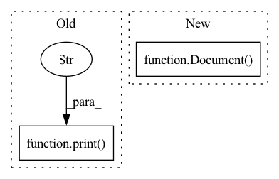

Pattern ID :1714
Before Change
print(f"{_doc.id[:10]}, buffer: {len(_doc.buffer)}, embed: {_doc.embedding.shape}, uri: {_doc.uri[:20]}, chunks: {len(_doc.chunks)}, matches: {len(_doc.matches)}")
if _doc.matches:
for m in _doc.matches:
print(f"\t+- {m.id[:10]}, score: {m.scores["doc_score"].value}, text: {m.text}, modality: {m.modality}, uri: {m.uri[:20]}" )
def index(data_set, num_docs, request_size):
flow = Flow().load_config("flows/flow-index.yml")After Change
def check_query_result(results):
text_doc = Document(results[0])
image_doc = Document( results[1])
print("Result documents:")
for _doc in [image_doc, text_doc]:
print(f"{_doc.id[:10]}, buffer: {len(_doc.buffer)}, embed: {_doc.embedding.shape}, uri: {_doc.uri[:20]}, chunks: {len(_doc.chunks)}, matches: {len(_doc.matches)}")
// Image doc matches are text:In pattern: SUPERPATTERN
Frequency: 3
Non-data size: 2
Instances Fragment ID: 8145968
Project Name: jina-ai/examples
Commit Name: 4de569187f138fc79cc6c08852f13315c1e545bc
Time: 2021-08-17
Author: jakob.kruse@jina.ai
File Name: cross-modal-search/app.py
M Class Name: AnonimousClass
N Class Name: AnonimousClass
M Method Name: check_query_result(1)
N Method Name: check_query_result(1)
M Parent Class:
N Parent Class:
M File Name: cross-modal-search/app.py
N File Name: cross-modal-search/app.py
M Start Line: 38
M End Line: 45
N Start Line: 33
N End Line: 52
Before Change
// search_text = "We all know about CRUD[1]. Every app out there does it."//blog2
// search_text = "Developing a Jina app often means writing YAML configs."//blog3
d.text = search_text
print("text search:" )
f.search(inputs=d, on_done=get_pdf)
def query_image():After Change
// search_text = "It makes sense to first define what we mean by multimodality before going into more fancy terms." // blog1
search_text = "We all know about CRUD[1]. Every app out there does it."//blog2
//search_text = "Developing a Jina app often means writing YAML configs." // blog3
d = Document(text=search_text)
f.post("/search", inputs=d, on_done=get_pdf)
def query_image(): Fragment ID: 8145969
Project Name: jina-ai/examples
Commit Name: cc88da871e087168f4adcb9b08f5ee11766b80a5
Time: 2021-06-02
Author: sebastian.lettner@jina.ai
File Name: multimodal-search-pdf/app.py
M Class Name: AnonimousClass
N Class Name: AnonimousClass
M Method Name: query_text(0)
N Method Name: query_text(0)
M Parent Class:
N Parent Class:
M File Name: multimodal-search-pdf/app.py
N File Name: multimodal-search-pdf/app.py
M Start Line: 74
M End Line: 79
N Start Line: 74
N End Line: 77
Before Change
//import glob
with f, open(data_path) as fp:
print(f"type: {type(fp)}")
print(f"lines: {type(np.array(fp.readlines()))}" )
d = Document.from_ndarray(np.array(fp.readlines()))
num_docs = min(num_docs, len(fp.readlines()))
with TimeContext(f"QPS: indexing {num_docs}", logger=f.logger):
f.post(on="/index", request_size=16, docs=d, parameters={"source_path": "./data"}, inputs=d)After Change
if not text:
break"""
d = Document(content=text)
def ppr(x):
print_topk(x, text)
Fragment ID: 8145970
Project Name: jina-ai/examples
Commit Name: 5a64b61e836d0126f174b465dbe6ce30c0dbba61
Time: 2021-05-21
Author: zhuoran2@andrew.cmu.edu
File Name: wikipedia-sentences/app.py
M Class Name: AnonimousClass
N Class Name: AnonimousClass
M Method Name: index(1)
N Method Name: index(1)
M Parent Class:
N Parent Class:
M File Name: wikipedia-sentences/app.py
N File Name: wikipedia-sentences/app.py
M Start Line: 37
M End Line: 55
N Start Line: 40
N End Line: 75